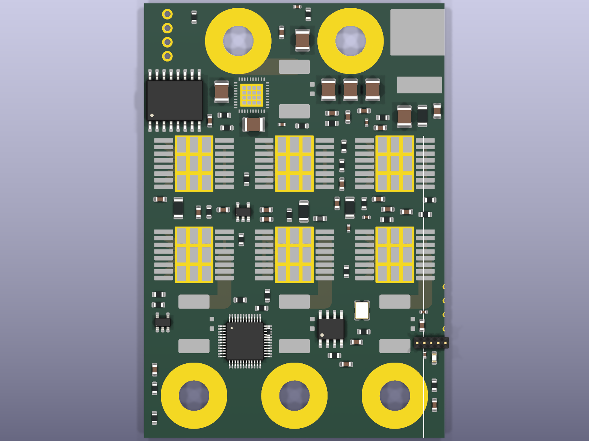

01 / Code
Read-only repository workspace · latest commits · bundled snapshot fallback.
Clone source repositories
Run Clone-Repositories.cmd in the extracted app folder. Requires Git and Python 3.10+. Both public repositories clone into repos; existing folders are preserved. No repository code executes.
Clone-Repositories.cmd · Python helper02 / Electronics
ESC revision B · CAD renders · fabrication release blocked.

Top render · release blocked
03 / CAD
Source-derived STL geometry · wireframe view · drag to rotate.
Phase-15 motor envelopes overlap. Assembly fit remains unresolved. Custom motor geometry is historical and superseded. Geometry display is not a load, thrust or flight simulation.
Contributors: Ethan, repository contributors and AI/bot tooling. Individual task attribution pending confirmation.
Source history
Source paths, hashes and commits · STEP-to-STL export script
PCB render generating commits are unverified. Rotor STEP history matches; historical motor STEP commit association remains unverified.
Loading source history…
Development photos